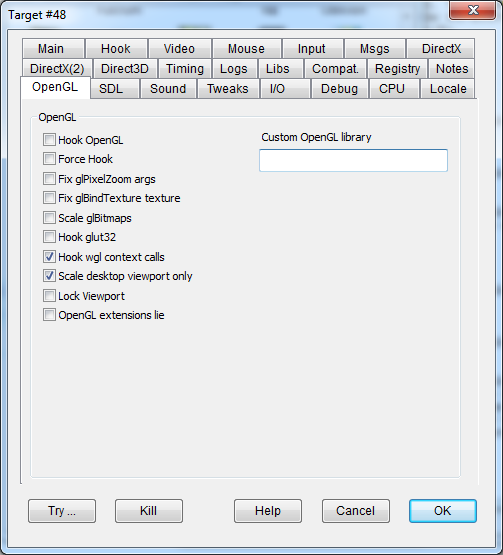

|
Hook OpenGL |
HOOKOPENGL |
Enables OpenGL API hooking. |
|
Force Hook |
FORCEHOOKOPENGL |
Experimental – probably unnecessary. |
|
Fix glPixelZoom args |
FIXPIXELZOOM |
Scales the xfactor and yfactor parameters of the glPixelZoom OpenGL call. Use this flag if the OpenGL screen is not properly scaled to fit the main window. |
|
Fix glBindTexture texture |
FIXBINDTEXTURE |
Recent OpenGL releases for Windows omit the glActiveTexture function, preventing the application from correctly switching textures. The visible effect is a replication of a single texture instead of the coordinated use of multiple textures to compose a screen. |
|
Scale glBitmaps |
SCALEGLBITMAPS |
Flag for runtime scaling of OpenGL glBitmap bitmaps - usable in "Devil Whiskey". |
|
Hook glut32 |
HOOKGLUT32 |
This flag hooks the glut32.dll OpenGL extension library to fix issues with some OpenGL games. |
|
Custom OpenGL library |
By default, DxWnd detects OpenGL APIs within the standard OpenGL32.dll library. This field allows you to set a different filename for any custom OpenGL implementation that may refer to a different library name. |
|
|
Hook wgl context calls |
HOOKWGLCONTEXT |
Flag to conditionally hook OpenGL wgl extensions. |
|
Scale desktop viewport only |
SCALEMAINVIEWPORT |
Flag to scale viewport size only when matching to desktop virtual size. In certain cases, it is necessary to scale only the viewport of the final rendering device, but the OpenGL call doesn't support a target typology, so guessing on the viewport requested size seems the only way. |
|
Lock viewport |
LOCKGLVIEWPORT |
Imposes a fixed viewport area as big as the whole window in case the application omitted to declare one and this causes malfuncioning. |
|
OpenGL extension lie |
GLEXTENSIONSLIE |
Some programs could malfunction because of a very long OpenGL extension string. This flag forces all calls that return OpenGL extensions to return a single, short fake extension. |